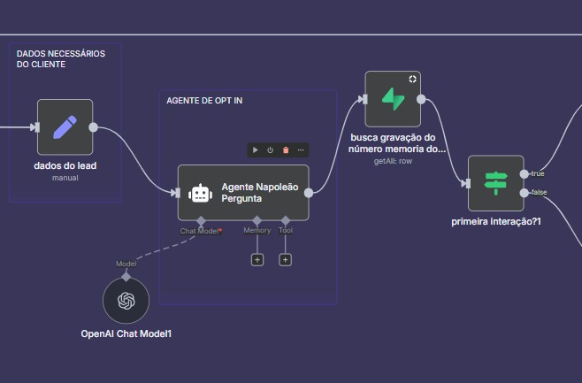
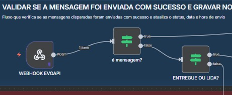
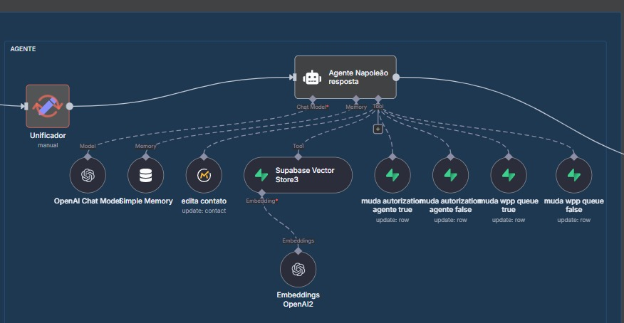

Agente de Opt‑in no WhatsApp
Agente com linguagem natural, memória resumida, tentativa automática (até 3x), e atualização de status no banco. Interpreta respostas e registra consentimento com rastreabilidade.
Desenvolvedor focado em transformar ideias em produtos reais. Minha stack favorita combina Web, Automação e Agentes de IA.

Sou Leandro Filipe, estudante de Análise e Desenvolvimento de Sistemas (4º período), apaixonado por tecnologia, resolução de problemas e construção de soluções com foco em experiência do usuário e impacto real.
Projetos com HTML, CSS, JavaScript, Python, Java e SQL. Vivência com Git/GitHub, REST APIs, POO, banco de dados (MySQL e PostgreSQL), design responsivo e fundamentos de backend.
Código limpo, soluções pragmáticas e evolução contínua. Curto criar interfaces fluidas e automações que poupam tempo.
Atuar em projetos desafiadores, especialmente com automação e IA aplicada ao negócio.
Construo agentes e automações que reduzem tarefas manuais e aumentam conversões.
Agente com linguagem natural, memória resumida, tentativa automática (até 3x), e atualização de status no banco. Interpreta respostas e registra consentimento com rastreabilidade.
Integração entre Webhooks, filas, APIs externas (ex.: Evolution/WhatsApp), persistência SQL e dashboards. Fluxos à prova de falhas com reenvio e controle de tentativas.
Vector Store (Supabase) e embeddings para enriquecer respostas. Gate de contexto para diferenciar dúvidas x opt‑in.
Fluxos n8n com opt-in, integrações e automações.

Detecção de consentimento, tentativas e registro no banco.

Orquestração entre webhooks, filas e APIs externas.

Embeddings + Supabase para contexto e buscas semânticas.
Espaço para seus certificados. Substitua as imagens/links abaixo pelos seus.
.png)
.png)
.png)